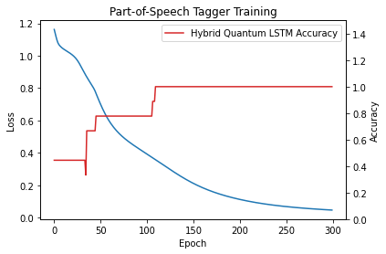
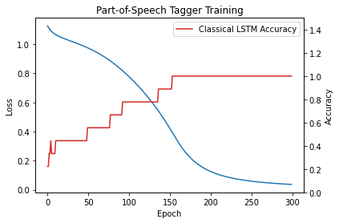

Hybrid Quantum Long-Short Term Memory NLP Example
The following example is adapted from the official documentation of pytorch, with the purpose of comparing the results of pytorch’s classical LSTM and our hybrid quantum implementation.
In brief, starting from an input sequence \(w_1\), …, \(w_i \in \mathcal{V}\) and a tag series \(\{y_j\}_{j=1,...i} \in \mathcal{T}\), being \(\mathcal{V}\) our vocabulary and \(\mathcal{T}\) our tag set, the model outputs a prediction \(\hat{y1}, ..., \hat{y_M} \in \mathcal{T}\) applying the following prediction rule
\begin{equation} \hat{y_i} = argmax_{j} \ log \ Softmax(Ah_i + b) \end{equation}
Please have a look at pytorch’s official documentation for further details.
[29]:
# TODO: uncomment the next line after release qlearnkit 0.2.0
#!pip install qlearnkit['pennylane']
!pip install matplotlib
Defaulting to user installation because normal site-packages is not writeable
Requirement already satisfied: matplotlib in /home/mspronesti/.local/lib/python3.8/site-packages (3.4.3)
Requirement already satisfied: python-dateutil>=2.7 in /home/mspronesti/.local/lib/python3.8/site-packages (from matplotlib) (2.8.2)
Requirement already satisfied: numpy>=1.16 in /home/mspronesti/.local/lib/python3.8/site-packages (from matplotlib) (1.21.5)
Requirement already satisfied: pyparsing>=2.2.1 in /home/mspronesti/.local/lib/python3.8/site-packages (from matplotlib) (2.4.7)
Requirement already satisfied: kiwisolver>=1.0.1 in /home/mspronesti/.local/lib/python3.8/site-packages (from matplotlib) (1.3.2)
Requirement already satisfied: cycler>=0.10 in /home/mspronesti/.local/lib/python3.8/site-packages (from matplotlib) (0.10.0)
Requirement already satisfied: pillow>=6.2.0 in /usr/lib/python3/dist-packages (from matplotlib) (7.0.0)
Requirement already satisfied: six in /home/mspronesti/.local/lib/python3.8/site-packages (from cycler>=0.10->matplotlib) (1.16.0)
[30]:
import qlearnkit as ql
import numpy as np
import torch
import torch.nn as nn
import torch.nn.functional as F
import torch.optim as optim
from matplotlib import pyplot as plt
Let’s first prepare our data
[31]:
tag_to_ix = {"DET": 0, "NN": 1, "V": 2} # Assign each tag with a unique index
ix_to_tag = {i: k for k, i in tag_to_ix.items()}
def prepare_sequence(seq, to_ix):
idxs = [to_ix[w] for w in seq]
return torch.tensor(idxs, dtype=torch.long)
training_data = [
# Tags are: DET - determiner; NN - noun; V - verb
# For example, the word "The" is a determiner
("The dog ate the apple".split(), ["DET", "NN", "V", "DET", "NN"]),
("Everybody read that book".split(), ["NN", "V", "DET", "NN"])
]
word_to_ix = {}
# For each words-list (sentence) and tags-list in each tuple of training_data
for sent, tags in training_data:
for word in sent:
if word not in word_to_ix: # word has not been assigned an index yet
word_to_ix[word] = len(word_to_ix) # Assign each word with a unique index
print(f"Vocabulary: {word_to_ix}")
print(f"Entities: {ix_to_tag}")
Vocabulary: {'The': 0, 'dog': 1, 'ate': 2, 'the': 3, 'apple': 4, 'Everybody': 5, 'read': 6, 'that': 7, 'book': 8}
Entities: {0: 'DET', 1: 'NN', 2: 'V'}
Now Let’s create the Tagger model embedding our LSTM
[32]:
class LSTMTagger(nn.Module):
def __init__(self,
model,
embedding_dim,
hidden_dim,
vocab_size,
tagset_size):
super(LSTMTagger, self).__init__()
self.hidden_dim = hidden_dim
self.word_embeddings = nn.Embedding(vocab_size, embedding_dim)
self.model = model
# The linear layer that maps from hidden state space to tag space
self.hidden2tag = nn.Linear(hidden_dim, tagset_size)
def forward(self, sentence):
embeds = self.word_embeddings(sentence)
lstm_out, _ = self.model(embeds.view(len(sentence), 1, -1))
tag_logits = self.hidden2tag(lstm_out.view(len(sentence), -1))
tag_scores = F.log_softmax(tag_logits, dim=1)
return tag_scores
Let’s set (by hand) some hyperparameters
[87]:
embedding_dim = 8
hidden_dim = 6
n_layers = 1
n_qubits = 4
n_epochs = 300
backend = 'default.qubit'
Let’s also create an helper trainer that accepting our hyperparameters and a model, to simply call it with our two implementations
[88]:
def trainer(lstm_model, embedding_dim, hidden_dim,
n_epochs, model_label):
# the LSTM Tagger Model
model = LSTMTagger(lstm_model,
embedding_dim,
hidden_dim,
vocab_size=len(word_to_ix),
tagset_size=len(tag_to_ix))
# loss function and Stochastic Gradient Descend
# as optimizers
loss_function = nn.NLLLoss()
optimizer = optim.SGD(model.parameters(), lr=0.1)
history = {
'loss': [],
'acc': []
}
for epoch in range(n_epochs):
losses = []
preds = []
targets = []
for sentence, tags in training_data:
# Step 1. Remember that Pytorch accumulates gradients.
# We need to clear them out before each instance
model.zero_grad()
# Step 2. Get our inputs ready for the network, that is, turn them into
# Tensors of word indices.
sentence_in = prepare_sequence(sentence, word_to_ix)
labels = prepare_sequence(tags, tag_to_ix)
# Step 3. Run our forward pass.
tag_scores = model(sentence_in)
# Step 4. Compute the loss, gradients, and update the parameters by
# calling optimizer.step()
loss = loss_function(tag_scores, labels)
loss.backward()
optimizer.step()
losses.append(float(loss))
probs = torch.softmax(tag_scores, dim=-1)
preds.append(probs.argmax(dim=-1))
targets.append(labels)
avg_loss = np.mean(losses)
history['loss'].append(avg_loss)
# print("preds", preds)
preds = torch.cat(preds)
targets = torch.cat(targets)
corrects = (preds == targets)
accuracy = corrects.sum().float() / float(targets.size(0))
history['acc'].append(accuracy)
print(f"Epoch {epoch + 1} / {n_epochs}: Loss = {avg_loss:.3f} Acc = {accuracy:.2f}")
with torch.no_grad():
input_sentence = training_data[0][0]
labels = training_data[0][1]
inputs = prepare_sequence(input_sentence, word_to_ix)
tag_scores = model(inputs)
tag_ids = torch.argmax(tag_scores, dim=1).numpy()
tag_labels = [ix_to_tag[k] for k in tag_ids]
print(f"Sentence: {input_sentence}")
print(f"Labels: {labels}")
print(f"Predicted: {tag_labels}")
fig, ax1 = plt.subplots()
ax1.set_xlabel("Epoch")
ax1.set_ylabel("Loss")
ax1.plot(history['loss'], label=f"{model_label} Loss")
ax2 = ax1.twinx()
ax2.set_ylabel("Accuracy")
ax2.plot(history['acc'], label=f"{model_label} LSTM Accuracy", color='tab:red')
plt.title("Part-of-Speech Tagger Training")
plt.ylim(0., 1.5)
plt.legend(loc="upper right")
plt.show()
Let’s create our Quantum LSTM from qleanrkit
[89]:
qlstm = ql.nn.QLongShortTermMemory(
embedding_dim,
hidden_dim,
n_layers,
n_qubits=n_qubits,
backend=backend
)
Let’s have a look at its (quantum) architecture
NOTICE: ignore the following code per se, it has nothing to do with the actual usage of qlearnkit’s QLSTM. It’s just here to cope with the required parameters of qml.draw
[90]:
# random values to feed into the QNode
inputs = torch.rand(embedding_dim, n_qubits)
weights = torch.rand(n_layers, n_qubits, 3)
import pennylane as qml
dev = qml.device(backend, wires=n_qubits)
circ = qml.QNode(qlstm._construct_vqc, dev)
print(qml.draw(circ, expansion_strategy='device', show_all_wires=True)(inputs, weights))
0: ──H──RY(M0)──RZ(M4)──╭C─────────────────────────────╭X──RX(0.989)──RY(0.95)───RZ(0.787)──┤ ⟨Z⟩
1: ──H──RY(M1)──RZ(M5)──╰X──╭C───RX(0.978)──RY(0.16)───│───RZ(0.859)────────────────────────┤ ⟨Z⟩
2: ──H──RY(M2)──RZ(M6)──────╰X──╭C──────────RX(0.234)──│───RY(0.628)──RZ(0.612)─────────────┤ ⟨Z⟩
3: ──H──RY(M3)──RZ(M7)──────────╰X─────────────────────╰C──RX(0.123)──RY(0.186)──RZ(0.642)──┤ ⟨Z⟩
M0 =
tensor([0.2950, 0.6869, 0.0673, 0.1683, 0.5993, 0.5091, 0.4533, 0.1108])
M1 =
tensor([0.2848, 0.2150, 0.0584, 0.6551, 0.5549, 0.4847, 0.4795, 0.5858])
M2 =
tensor([0.0385, 0.5281, 0.1947, 0.3548, 0.7059, 0.5676, 0.1746, 0.5629])
M3 =
tensor([0.2765, 0.3603, 0.7042, 0.2802, 0.3494, 0.5903, 0.6575, 0.3230])
M4 =
tensor([0.0921, 0.5921, 0.0045, 0.0289, 0.4365, 0.3020, 0.2330, 0.0124])
M5 =
tensor([0.0855, 0.0477, 0.0034, 0.5333, 0.3668, 0.2705, 0.2640, 0.4147])
M6 =
tensor([0.0015, 0.3280, 0.0389, 0.1364, 0.6284, 0.3862, 0.0311, 0.3790])
M7 =
tensor([0.0804, 0.1410, 0.6251, 0.0826, 0.1320, 0.4219, 0.5376, 0.1116])
Now we can train our hybrid-quantum model
[92]:
trainer(qlstm, embedding_dim, hidden_dim, n_epochs, model_label='Hybrid Quantum')
Epoch 1 / 300: Loss = 1.162 Acc = 0.44
Epoch 2 / 300: Loss = 1.138 Acc = 0.44
Epoch 3 / 300: Loss = 1.116 Acc = 0.44
Epoch 4 / 300: Loss = 1.095 Acc = 0.44
Epoch 5 / 300: Loss = 1.079 Acc = 0.44
Epoch 6 / 300: Loss = 1.069 Acc = 0.44
Epoch 7 / 300: Loss = 1.061 Acc = 0.44
Epoch 8 / 300: Loss = 1.055 Acc = 0.44
Epoch 9 / 300: Loss = 1.050 Acc = 0.44
Epoch 10 / 300: Loss = 1.046 Acc = 0.44
Epoch 11 / 300: Loss = 1.041 Acc = 0.44
Epoch 12 / 300: Loss = 1.037 Acc = 0.44
Epoch 13 / 300: Loss = 1.034 Acc = 0.44
Epoch 14 / 300: Loss = 1.030 Acc = 0.44
Epoch 15 / 300: Loss = 1.027 Acc = 0.44
Epoch 16 / 300: Loss = 1.023 Acc = 0.44
Epoch 17 / 300: Loss = 1.019 Acc = 0.44
Epoch 18 / 300: Loss = 1.015 Acc = 0.44
Epoch 19 / 300: Loss = 1.011 Acc = 0.44
Epoch 20 / 300: Loss = 1.007 Acc = 0.44
Epoch 21 / 300: Loss = 1.002 Acc = 0.44
Epoch 22 / 300: Loss = 0.997 Acc = 0.44
Epoch 23 / 300: Loss = 0.991 Acc = 0.44
Epoch 24 / 300: Loss = 0.985 Acc = 0.44
Epoch 25 / 300: Loss = 0.978 Acc = 0.44
Epoch 26 / 300: Loss = 0.971 Acc = 0.44
Epoch 27 / 300: Loss = 0.962 Acc = 0.44
Epoch 28 / 300: Loss = 0.952 Acc = 0.44
Epoch 29 / 300: Loss = 0.942 Acc = 0.44
Epoch 30 / 300: Loss = 0.931 Acc = 0.44
Epoch 31 / 300: Loss = 0.921 Acc = 0.44
Epoch 32 / 300: Loss = 0.910 Acc = 0.44
Epoch 33 / 300: Loss = 0.899 Acc = 0.44
Epoch 34 / 300: Loss = 0.889 Acc = 0.44
Epoch 35 / 300: Loss = 0.879 Acc = 0.33
Epoch 36 / 300: Loss = 0.869 Acc = 0.67
Epoch 37 / 300: Loss = 0.859 Acc = 0.67
Epoch 38 / 300: Loss = 0.850 Acc = 0.67
Epoch 39 / 300: Loss = 0.841 Acc = 0.67
Epoch 40 / 300: Loss = 0.832 Acc = 0.67
Epoch 41 / 300: Loss = 0.823 Acc = 0.67
Epoch 42 / 300: Loss = 0.813 Acc = 0.67
Epoch 43 / 300: Loss = 0.804 Acc = 0.67
Epoch 44 / 300: Loss = 0.793 Acc = 0.67
Epoch 45 / 300: Loss = 0.781 Acc = 0.67
Epoch 46 / 300: Loss = 0.768 Acc = 0.78
Epoch 47 / 300: Loss = 0.753 Acc = 0.78
Epoch 48 / 300: Loss = 0.739 Acc = 0.78
Epoch 49 / 300: Loss = 0.725 Acc = 0.78
Epoch 50 / 300: Loss = 0.712 Acc = 0.78
Epoch 51 / 300: Loss = 0.699 Acc = 0.78
Epoch 52 / 300: Loss = 0.686 Acc = 0.78
Epoch 53 / 300: Loss = 0.673 Acc = 0.78
Epoch 54 / 300: Loss = 0.661 Acc = 0.78
Epoch 55 / 300: Loss = 0.650 Acc = 0.78
Epoch 56 / 300: Loss = 0.638 Acc = 0.78
Epoch 57 / 300: Loss = 0.628 Acc = 0.78
Epoch 58 / 300: Loss = 0.617 Acc = 0.78
Epoch 59 / 300: Loss = 0.608 Acc = 0.78
Epoch 60 / 300: Loss = 0.598 Acc = 0.78
Epoch 61 / 300: Loss = 0.589 Acc = 0.78
Epoch 62 / 300: Loss = 0.581 Acc = 0.78
Epoch 63 / 300: Loss = 0.573 Acc = 0.78
Epoch 64 / 300: Loss = 0.565 Acc = 0.78
Epoch 65 / 300: Loss = 0.558 Acc = 0.78
Epoch 66 / 300: Loss = 0.550 Acc = 0.78
Epoch 67 / 300: Loss = 0.544 Acc = 0.78
Epoch 68 / 300: Loss = 0.537 Acc = 0.78
Epoch 69 / 300: Loss = 0.531 Acc = 0.78
Epoch 70 / 300: Loss = 0.525 Acc = 0.78
Epoch 71 / 300: Loss = 0.519 Acc = 0.78
Epoch 72 / 300: Loss = 0.513 Acc = 0.78
Epoch 73 / 300: Loss = 0.508 Acc = 0.78
Epoch 74 / 300: Loss = 0.503 Acc = 0.78
Epoch 75 / 300: Loss = 0.498 Acc = 0.78
Epoch 76 / 300: Loss = 0.493 Acc = 0.78
Epoch 77 / 300: Loss = 0.488 Acc = 0.78
Epoch 78 / 300: Loss = 0.483 Acc = 0.78
Epoch 79 / 300: Loss = 0.479 Acc = 0.78
Epoch 80 / 300: Loss = 0.474 Acc = 0.78
Epoch 81 / 300: Loss = 0.470 Acc = 0.78
Epoch 82 / 300: Loss = 0.465 Acc = 0.78
Epoch 83 / 300: Loss = 0.461 Acc = 0.78
Epoch 84 / 300: Loss = 0.457 Acc = 0.78
Epoch 85 / 300: Loss = 0.453 Acc = 0.78
Epoch 86 / 300: Loss = 0.449 Acc = 0.78
Epoch 87 / 300: Loss = 0.445 Acc = 0.78
Epoch 88 / 300: Loss = 0.441 Acc = 0.78
Epoch 89 / 300: Loss = 0.437 Acc = 0.78
Epoch 90 / 300: Loss = 0.433 Acc = 0.78
Epoch 91 / 300: Loss = 0.430 Acc = 0.78
Epoch 92 / 300: Loss = 0.426 Acc = 0.78
Epoch 93 / 300: Loss = 0.422 Acc = 0.78
Epoch 94 / 300: Loss = 0.418 Acc = 0.78
Epoch 95 / 300: Loss = 0.415 Acc = 0.78
Epoch 96 / 300: Loss = 0.411 Acc = 0.78
Epoch 97 / 300: Loss = 0.407 Acc = 0.78
Epoch 98 / 300: Loss = 0.403 Acc = 0.78
Epoch 99 / 300: Loss = 0.400 Acc = 0.78
Epoch 100 / 300: Loss = 0.396 Acc = 0.78
Epoch 101 / 300: Loss = 0.392 Acc = 0.78
Epoch 102 / 300: Loss = 0.389 Acc = 0.78
Epoch 103 / 300: Loss = 0.385 Acc = 0.78
Epoch 104 / 300: Loss = 0.381 Acc = 0.78
Epoch 105 / 300: Loss = 0.377 Acc = 0.78
Epoch 106 / 300: Loss = 0.374 Acc = 0.78
Epoch 107 / 300: Loss = 0.370 Acc = 0.89
Epoch 108 / 300: Loss = 0.366 Acc = 0.89
Epoch 109 / 300: Loss = 0.362 Acc = 0.89
Epoch 110 / 300: Loss = 0.358 Acc = 1.00
Epoch 111 / 300: Loss = 0.355 Acc = 1.00
Epoch 112 / 300: Loss = 0.351 Acc = 1.00
Epoch 113 / 300: Loss = 0.347 Acc = 1.00
Epoch 114 / 300: Loss = 0.343 Acc = 1.00
Epoch 115 / 300: Loss = 0.339 Acc = 1.00
Epoch 116 / 300: Loss = 0.335 Acc = 1.00
Epoch 117 / 300: Loss = 0.331 Acc = 1.00
Epoch 118 / 300: Loss = 0.327 Acc = 1.00
Epoch 119 / 300: Loss = 0.324 Acc = 1.00
Epoch 120 / 300: Loss = 0.320 Acc = 1.00
Epoch 121 / 300: Loss = 0.316 Acc = 1.00
Epoch 122 / 300: Loss = 0.312 Acc = 1.00
Epoch 123 / 300: Loss = 0.308 Acc = 1.00
Epoch 124 / 300: Loss = 0.304 Acc = 1.00
Epoch 125 / 300: Loss = 0.300 Acc = 1.00
Epoch 126 / 300: Loss = 0.296 Acc = 1.00
Epoch 127 / 300: Loss = 0.293 Acc = 1.00
Epoch 128 / 300: Loss = 0.289 Acc = 1.00
Epoch 129 / 300: Loss = 0.285 Acc = 1.00
Epoch 130 / 300: Loss = 0.281 Acc = 1.00
Epoch 131 / 300: Loss = 0.278 Acc = 1.00
Epoch 132 / 300: Loss = 0.274 Acc = 1.00
Epoch 133 / 300: Loss = 0.270 Acc = 1.00
Epoch 134 / 300: Loss = 0.267 Acc = 1.00
Epoch 135 / 300: Loss = 0.263 Acc = 1.00
Epoch 136 / 300: Loss = 0.260 Acc = 1.00
Epoch 137 / 300: Loss = 0.256 Acc = 1.00
Epoch 138 / 300: Loss = 0.253 Acc = 1.00
Epoch 139 / 300: Loss = 0.249 Acc = 1.00
Epoch 140 / 300: Loss = 0.246 Acc = 1.00
Epoch 141 / 300: Loss = 0.242 Acc = 1.00
Epoch 142 / 300: Loss = 0.239 Acc = 1.00
Epoch 143 / 300: Loss = 0.236 Acc = 1.00
Epoch 144 / 300: Loss = 0.232 Acc = 1.00
Epoch 145 / 300: Loss = 0.229 Acc = 1.00
Epoch 146 / 300: Loss = 0.226 Acc = 1.00
Epoch 147 / 300: Loss = 0.223 Acc = 1.00
Epoch 148 / 300: Loss = 0.220 Acc = 1.00
Epoch 149 / 300: Loss = 0.217 Acc = 1.00
Epoch 150 / 300: Loss = 0.214 Acc = 1.00
Epoch 151 / 300: Loss = 0.211 Acc = 1.00
Epoch 152 / 300: Loss = 0.208 Acc = 1.00
Epoch 153 / 300: Loss = 0.205 Acc = 1.00
Epoch 154 / 300: Loss = 0.202 Acc = 1.00
Epoch 155 / 300: Loss = 0.200 Acc = 1.00
Epoch 156 / 300: Loss = 0.197 Acc = 1.00
Epoch 157 / 300: Loss = 0.194 Acc = 1.00
Epoch 158 / 300: Loss = 0.192 Acc = 1.00
Epoch 159 / 300: Loss = 0.189 Acc = 1.00
Epoch 160 / 300: Loss = 0.187 Acc = 1.00
Epoch 161 / 300: Loss = 0.184 Acc = 1.00
Epoch 162 / 300: Loss = 0.182 Acc = 1.00
Epoch 163 / 300: Loss = 0.179 Acc = 1.00
Epoch 164 / 300: Loss = 0.177 Acc = 1.00
Epoch 165 / 300: Loss = 0.174 Acc = 1.00
Epoch 166 / 300: Loss = 0.172 Acc = 1.00
Epoch 167 / 300: Loss = 0.170 Acc = 1.00
Epoch 168 / 300: Loss = 0.168 Acc = 1.00
Epoch 169 / 300: Loss = 0.166 Acc = 1.00
Epoch 170 / 300: Loss = 0.163 Acc = 1.00
Epoch 171 / 300: Loss = 0.161 Acc = 1.00
Epoch 172 / 300: Loss = 0.159 Acc = 1.00
Epoch 173 / 300: Loss = 0.157 Acc = 1.00
Epoch 174 / 300: Loss = 0.155 Acc = 1.00
Epoch 175 / 300: Loss = 0.153 Acc = 1.00
Epoch 176 / 300: Loss = 0.151 Acc = 1.00
Epoch 177 / 300: Loss = 0.149 Acc = 1.00
Epoch 178 / 300: Loss = 0.148 Acc = 1.00
Epoch 179 / 300: Loss = 0.146 Acc = 1.00
Epoch 180 / 300: Loss = 0.144 Acc = 1.00
Epoch 181 / 300: Loss = 0.142 Acc = 1.00
Epoch 182 / 300: Loss = 0.140 Acc = 1.00
Epoch 183 / 300: Loss = 0.139 Acc = 1.00
Epoch 184 / 300: Loss = 0.137 Acc = 1.00
Epoch 185 / 300: Loss = 0.135 Acc = 1.00
Epoch 186 / 300: Loss = 0.134 Acc = 1.00
Epoch 187 / 300: Loss = 0.132 Acc = 1.00
Epoch 188 / 300: Loss = 0.131 Acc = 1.00
Epoch 189 / 300: Loss = 0.129 Acc = 1.00
Epoch 190 / 300: Loss = 0.127 Acc = 1.00
Epoch 191 / 300: Loss = 0.126 Acc = 1.00
Epoch 192 / 300: Loss = 0.124 Acc = 1.00
Epoch 193 / 300: Loss = 0.123 Acc = 1.00
Epoch 194 / 300: Loss = 0.122 Acc = 1.00
Epoch 195 / 300: Loss = 0.120 Acc = 1.00
Epoch 196 / 300: Loss = 0.119 Acc = 1.00
Epoch 197 / 300: Loss = 0.117 Acc = 1.00
Epoch 198 / 300: Loss = 0.116 Acc = 1.00
Epoch 199 / 300: Loss = 0.115 Acc = 1.00
Epoch 200 / 300: Loss = 0.113 Acc = 1.00
Epoch 201 / 300: Loss = 0.112 Acc = 1.00
Epoch 202 / 300: Loss = 0.111 Acc = 1.00
Epoch 203 / 300: Loss = 0.110 Acc = 1.00
Epoch 204 / 300: Loss = 0.108 Acc = 1.00
Epoch 205 / 300: Loss = 0.107 Acc = 1.00
Epoch 206 / 300: Loss = 0.106 Acc = 1.00
Epoch 207 / 300: Loss = 0.105 Acc = 1.00
Epoch 208 / 300: Loss = 0.104 Acc = 1.00
Epoch 209 / 300: Loss = 0.103 Acc = 1.00
Epoch 210 / 300: Loss = 0.101 Acc = 1.00
Epoch 211 / 300: Loss = 0.100 Acc = 1.00
Epoch 212 / 300: Loss = 0.099 Acc = 1.00
Epoch 213 / 300: Loss = 0.098 Acc = 1.00
Epoch 214 / 300: Loss = 0.097 Acc = 1.00
Epoch 215 / 300: Loss = 0.096 Acc = 1.00
Epoch 216 / 300: Loss = 0.095 Acc = 1.00
Epoch 217 / 300: Loss = 0.094 Acc = 1.00
Epoch 218 / 300: Loss = 0.093 Acc = 1.00
Epoch 219 / 300: Loss = 0.092 Acc = 1.00
Epoch 220 / 300: Loss = 0.091 Acc = 1.00
Epoch 221 / 300: Loss = 0.090 Acc = 1.00
Epoch 222 / 300: Loss = 0.089 Acc = 1.00
Epoch 223 / 300: Loss = 0.088 Acc = 1.00
Epoch 224 / 300: Loss = 0.088 Acc = 1.00
Epoch 225 / 300: Loss = 0.087 Acc = 1.00
Epoch 226 / 300: Loss = 0.086 Acc = 1.00
Epoch 227 / 300: Loss = 0.085 Acc = 1.00
Epoch 228 / 300: Loss = 0.084 Acc = 1.00
Epoch 229 / 300: Loss = 0.083 Acc = 1.00
Epoch 230 / 300: Loss = 0.082 Acc = 1.00
Epoch 231 / 300: Loss = 0.082 Acc = 1.00
Epoch 232 / 300: Loss = 0.081 Acc = 1.00
Epoch 233 / 300: Loss = 0.080 Acc = 1.00
Epoch 234 / 300: Loss = 0.079 Acc = 1.00
Epoch 235 / 300: Loss = 0.079 Acc = 1.00
Epoch 236 / 300: Loss = 0.078 Acc = 1.00
Epoch 237 / 300: Loss = 0.077 Acc = 1.00
Epoch 238 / 300: Loss = 0.076 Acc = 1.00
Epoch 239 / 300: Loss = 0.076 Acc = 1.00
Epoch 240 / 300: Loss = 0.075 Acc = 1.00
Epoch 241 / 300: Loss = 0.074 Acc = 1.00
Epoch 242 / 300: Loss = 0.074 Acc = 1.00
Epoch 243 / 300: Loss = 0.073 Acc = 1.00
Epoch 244 / 300: Loss = 0.072 Acc = 1.00
Epoch 245 / 300: Loss = 0.072 Acc = 1.00
Epoch 246 / 300: Loss = 0.071 Acc = 1.00
Epoch 247 / 300: Loss = 0.070 Acc = 1.00
Epoch 248 / 300: Loss = 0.070 Acc = 1.00
Epoch 249 / 300: Loss = 0.069 Acc = 1.00
Epoch 250 / 300: Loss = 0.069 Acc = 1.00
Epoch 251 / 300: Loss = 0.068 Acc = 1.00
Epoch 252 / 300: Loss = 0.067 Acc = 1.00
Epoch 253 / 300: Loss = 0.067 Acc = 1.00
Epoch 254 / 300: Loss = 0.066 Acc = 1.00
Epoch 255 / 300: Loss = 0.066 Acc = 1.00
Epoch 256 / 300: Loss = 0.065 Acc = 1.00
Epoch 257 / 300: Loss = 0.065 Acc = 1.00
Epoch 258 / 300: Loss = 0.064 Acc = 1.00
Epoch 259 / 300: Loss = 0.064 Acc = 1.00
Epoch 260 / 300: Loss = 0.063 Acc = 1.00
Epoch 261 / 300: Loss = 0.062 Acc = 1.00
Epoch 262 / 300: Loss = 0.062 Acc = 1.00
Epoch 263 / 300: Loss = 0.061 Acc = 1.00
Epoch 264 / 300: Loss = 0.061 Acc = 1.00
Epoch 265 / 300: Loss = 0.060 Acc = 1.00
Epoch 266 / 300: Loss = 0.060 Acc = 1.00
Epoch 267 / 300: Loss = 0.060 Acc = 1.00
Epoch 268 / 300: Loss = 0.059 Acc = 1.00
Epoch 269 / 300: Loss = 0.059 Acc = 1.00
Epoch 270 / 300: Loss = 0.058 Acc = 1.00
Epoch 271 / 300: Loss = 0.058 Acc = 1.00
Epoch 272 / 300: Loss = 0.057 Acc = 1.00
Epoch 273 / 300: Loss = 0.057 Acc = 1.00
Epoch 274 / 300: Loss = 0.056 Acc = 1.00
Epoch 275 / 300: Loss = 0.056 Acc = 1.00
Epoch 276 / 300: Loss = 0.055 Acc = 1.00
Epoch 277 / 300: Loss = 0.055 Acc = 1.00
Epoch 278 / 300: Loss = 0.055 Acc = 1.00
Epoch 279 / 300: Loss = 0.054 Acc = 1.00
Epoch 280 / 300: Loss = 0.054 Acc = 1.00
Epoch 281 / 300: Loss = 0.053 Acc = 1.00
Epoch 282 / 300: Loss = 0.053 Acc = 1.00
Epoch 283 / 300: Loss = 0.053 Acc = 1.00
Epoch 284 / 300: Loss = 0.052 Acc = 1.00
Epoch 285 / 300: Loss = 0.052 Acc = 1.00
Epoch 286 / 300: Loss = 0.051 Acc = 1.00
Epoch 287 / 300: Loss = 0.051 Acc = 1.00
Epoch 288 / 300: Loss = 0.051 Acc = 1.00
Epoch 289 / 300: Loss = 0.050 Acc = 1.00
Epoch 290 / 300: Loss = 0.050 Acc = 1.00
Epoch 291 / 300: Loss = 0.050 Acc = 1.00
Epoch 292 / 300: Loss = 0.049 Acc = 1.00
Epoch 293 / 300: Loss = 0.049 Acc = 1.00
Epoch 294 / 300: Loss = 0.049 Acc = 1.00
Epoch 295 / 300: Loss = 0.048 Acc = 1.00
Epoch 296 / 300: Loss = 0.048 Acc = 1.00
Epoch 297 / 300: Loss = 0.048 Acc = 1.00
Epoch 298 / 300: Loss = 0.047 Acc = 1.00
Epoch 299 / 300: Loss = 0.047 Acc = 1.00
Epoch 300 / 300: Loss = 0.047 Acc = 1.00
Sentence: ['The', 'dog', 'ate', 'the', 'apple']
Labels: ['DET', 'NN', 'V', 'DET', 'NN']
Predicted: ['DET', 'NN', 'V', 'DET', 'NN']

Let’s compare it with the classical version
[37]:
clstm = nn.LSTM(embedding_dim, hidden_dim, num_layers=n_layers)
trainer(clstm, embedding_dim, hidden_dim, n_epochs,model_label='Classical')
Epoch 1 / 300: Loss = 1.126 Acc = 0.22
Epoch 2 / 300: Loss = 1.116 Acc = 0.22
Epoch 3 / 300: Loss = 1.108 Acc = 0.33
Epoch 4 / 300: Loss = 1.100 Acc = 0.33
Epoch 5 / 300: Loss = 1.093 Acc = 0.44
Epoch 6 / 300: Loss = 1.087 Acc = 0.33
Epoch 7 / 300: Loss = 1.082 Acc = 0.33
Epoch 8 / 300: Loss = 1.077 Acc = 0.33
Epoch 9 / 300: Loss = 1.073 Acc = 0.33
Epoch 10 / 300: Loss = 1.069 Acc = 0.33
Epoch 11 / 300: Loss = 1.066 Acc = 0.44
Epoch 12 / 300: Loss = 1.062 Acc = 0.44
Epoch 13 / 300: Loss = 1.059 Acc = 0.44
Epoch 14 / 300: Loss = 1.057 Acc = 0.44
Epoch 15 / 300: Loss = 1.054 Acc = 0.44
Epoch 16 / 300: Loss = 1.051 Acc = 0.44
Epoch 17 / 300: Loss = 1.049 Acc = 0.44
Epoch 18 / 300: Loss = 1.046 Acc = 0.44
Epoch 19 / 300: Loss = 1.044 Acc = 0.44
Epoch 20 / 300: Loss = 1.042 Acc = 0.44
Epoch 21 / 300: Loss = 1.040 Acc = 0.44
Epoch 22 / 300: Loss = 1.038 Acc = 0.44
Epoch 23 / 300: Loss = 1.035 Acc = 0.44
Epoch 24 / 300: Loss = 1.033 Acc = 0.44
Epoch 25 / 300: Loss = 1.031 Acc = 0.44
Epoch 26 / 300: Loss = 1.029 Acc = 0.44
Epoch 27 / 300: Loss = 1.027 Acc = 0.44
Epoch 28 / 300: Loss = 1.025 Acc = 0.44
Epoch 29 / 300: Loss = 1.023 Acc = 0.44
Epoch 30 / 300: Loss = 1.021 Acc = 0.44
Epoch 31 / 300: Loss = 1.019 Acc = 0.44
Epoch 32 / 300: Loss = 1.017 Acc = 0.44
Epoch 33 / 300: Loss = 1.015 Acc = 0.44
Epoch 34 / 300: Loss = 1.013 Acc = 0.44
Epoch 35 / 300: Loss = 1.011 Acc = 0.44
Epoch 36 / 300: Loss = 1.009 Acc = 0.44
Epoch 37 / 300: Loss = 1.006 Acc = 0.44
Epoch 38 / 300: Loss = 1.004 Acc = 0.44
Epoch 39 / 300: Loss = 1.002 Acc = 0.44
Epoch 40 / 300: Loss = 1.000 Acc = 0.44
Epoch 41 / 300: Loss = 0.998 Acc = 0.44
Epoch 42 / 300: Loss = 0.995 Acc = 0.44
Epoch 43 / 300: Loss = 0.993 Acc = 0.44
Epoch 44 / 300: Loss = 0.991 Acc = 0.44
Epoch 45 / 300: Loss = 0.988 Acc = 0.44
Epoch 46 / 300: Loss = 0.986 Acc = 0.44
Epoch 47 / 300: Loss = 0.983 Acc = 0.44
Epoch 48 / 300: Loss = 0.981 Acc = 0.44
Epoch 49 / 300: Loss = 0.978 Acc = 0.44
Epoch 50 / 300: Loss = 0.976 Acc = 0.56
Epoch 51 / 300: Loss = 0.973 Acc = 0.56
Epoch 52 / 300: Loss = 0.971 Acc = 0.56
Epoch 53 / 300: Loss = 0.968 Acc = 0.56
Epoch 54 / 300: Loss = 0.965 Acc = 0.56
Epoch 55 / 300: Loss = 0.963 Acc = 0.56
Epoch 56 / 300: Loss = 0.960 Acc = 0.56
Epoch 57 / 300: Loss = 0.957 Acc = 0.56
Epoch 58 / 300: Loss = 0.954 Acc = 0.56
Epoch 59 / 300: Loss = 0.951 Acc = 0.56
Epoch 60 / 300: Loss = 0.948 Acc = 0.56
Epoch 61 / 300: Loss = 0.945 Acc = 0.56
Epoch 62 / 300: Loss = 0.942 Acc = 0.56
Epoch 63 / 300: Loss = 0.939 Acc = 0.56
Epoch 64 / 300: Loss = 0.936 Acc = 0.56
Epoch 65 / 300: Loss = 0.933 Acc = 0.56
Epoch 66 / 300: Loss = 0.929 Acc = 0.56
Epoch 67 / 300: Loss = 0.926 Acc = 0.56
Epoch 68 / 300: Loss = 0.923 Acc = 0.56
Epoch 69 / 300: Loss = 0.919 Acc = 0.56
Epoch 70 / 300: Loss = 0.916 Acc = 0.56
Epoch 71 / 300: Loss = 0.912 Acc = 0.56
Epoch 72 / 300: Loss = 0.908 Acc = 0.56
Epoch 73 / 300: Loss = 0.905 Acc = 0.56
Epoch 74 / 300: Loss = 0.901 Acc = 0.56
Epoch 75 / 300: Loss = 0.897 Acc = 0.56
Epoch 76 / 300: Loss = 0.893 Acc = 0.56
Epoch 77 / 300: Loss = 0.889 Acc = 0.56
Epoch 78 / 300: Loss = 0.885 Acc = 0.67
Epoch 79 / 300: Loss = 0.881 Acc = 0.67
Epoch 80 / 300: Loss = 0.877 Acc = 0.67
Epoch 81 / 300: Loss = 0.873 Acc = 0.67
Epoch 82 / 300: Loss = 0.869 Acc = 0.67
Epoch 83 / 300: Loss = 0.864 Acc = 0.67
Epoch 84 / 300: Loss = 0.860 Acc = 0.67
Epoch 85 / 300: Loss = 0.856 Acc = 0.67
Epoch 86 / 300: Loss = 0.851 Acc = 0.67
Epoch 87 / 300: Loss = 0.847 Acc = 0.67
Epoch 88 / 300: Loss = 0.842 Acc = 0.67
Epoch 89 / 300: Loss = 0.837 Acc = 0.67
Epoch 90 / 300: Loss = 0.833 Acc = 0.67
Epoch 91 / 300: Loss = 0.828 Acc = 0.67
Epoch 92 / 300: Loss = 0.823 Acc = 0.67
Epoch 93 / 300: Loss = 0.818 Acc = 0.78
Epoch 94 / 300: Loss = 0.813 Acc = 0.78
Epoch 95 / 300: Loss = 0.808 Acc = 0.78
Epoch 96 / 300: Loss = 0.803 Acc = 0.78
Epoch 97 / 300: Loss = 0.798 Acc = 0.78
Epoch 98 / 300: Loss = 0.793 Acc = 0.78
Epoch 99 / 300: Loss = 0.788 Acc = 0.78
Epoch 100 / 300: Loss = 0.782 Acc = 0.78
Epoch 101 / 300: Loss = 0.777 Acc = 0.78
Epoch 102 / 300: Loss = 0.772 Acc = 0.78
Epoch 103 / 300: Loss = 0.766 Acc = 0.78
Epoch 104 / 300: Loss = 0.761 Acc = 0.78
Epoch 105 / 300: Loss = 0.755 Acc = 0.78
Epoch 106 / 300: Loss = 0.749 Acc = 0.78
Epoch 107 / 300: Loss = 0.744 Acc = 0.78
Epoch 108 / 300: Loss = 0.738 Acc = 0.78
Epoch 109 / 300: Loss = 0.732 Acc = 0.78
Epoch 110 / 300: Loss = 0.726 Acc = 0.78
Epoch 111 / 300: Loss = 0.720 Acc = 0.78
Epoch 112 / 300: Loss = 0.714 Acc = 0.78
Epoch 113 / 300: Loss = 0.708 Acc = 0.78
Epoch 114 / 300: Loss = 0.702 Acc = 0.78
Epoch 115 / 300: Loss = 0.696 Acc = 0.78
Epoch 116 / 300: Loss = 0.690 Acc = 0.78
Epoch 117 / 300: Loss = 0.683 Acc = 0.78
Epoch 118 / 300: Loss = 0.677 Acc = 0.78
Epoch 119 / 300: Loss = 0.671 Acc = 0.78
Epoch 120 / 300: Loss = 0.664 Acc = 0.78
Epoch 121 / 300: Loss = 0.657 Acc = 0.78
Epoch 122 / 300: Loss = 0.651 Acc = 0.78
Epoch 123 / 300: Loss = 0.644 Acc = 0.78
Epoch 124 / 300: Loss = 0.637 Acc = 0.78
Epoch 125 / 300: Loss = 0.630 Acc = 0.78
Epoch 126 / 300: Loss = 0.623 Acc = 0.78
Epoch 127 / 300: Loss = 0.616 Acc = 0.78
Epoch 128 / 300: Loss = 0.609 Acc = 0.78
Epoch 129 / 300: Loss = 0.602 Acc = 0.78
Epoch 130 / 300: Loss = 0.594 Acc = 0.78
Epoch 131 / 300: Loss = 0.587 Acc = 0.78
Epoch 132 / 300: Loss = 0.580 Acc = 0.78
Epoch 133 / 300: Loss = 0.572 Acc = 0.78
Epoch 134 / 300: Loss = 0.564 Acc = 0.78
Epoch 135 / 300: Loss = 0.557 Acc = 0.78
Epoch 136 / 300: Loss = 0.549 Acc = 0.78
Epoch 137 / 300: Loss = 0.541 Acc = 0.89
Epoch 138 / 300: Loss = 0.533 Acc = 0.89
Epoch 139 / 300: Loss = 0.525 Acc = 0.89
Epoch 140 / 300: Loss = 0.517 Acc = 0.89
Epoch 141 / 300: Loss = 0.509 Acc = 0.89
Epoch 142 / 300: Loss = 0.500 Acc = 0.89
Epoch 143 / 300: Loss = 0.492 Acc = 0.89
Epoch 144 / 300: Loss = 0.484 Acc = 0.89
Epoch 145 / 300: Loss = 0.475 Acc = 0.89
Epoch 146 / 300: Loss = 0.466 Acc = 0.89
Epoch 147 / 300: Loss = 0.458 Acc = 0.89
Epoch 148 / 300: Loss = 0.449 Acc = 0.89
Epoch 149 / 300: Loss = 0.440 Acc = 0.89
Epoch 150 / 300: Loss = 0.431 Acc = 0.89
Epoch 151 / 300: Loss = 0.422 Acc = 0.89
Epoch 152 / 300: Loss = 0.413 Acc = 0.89
Epoch 153 / 300: Loss = 0.403 Acc = 0.89
Epoch 154 / 300: Loss = 0.394 Acc = 1.00
Epoch 155 / 300: Loss = 0.385 Acc = 1.00
Epoch 156 / 300: Loss = 0.375 Acc = 1.00
Epoch 157 / 300: Loss = 0.366 Acc = 1.00
Epoch 158 / 300: Loss = 0.356 Acc = 1.00
Epoch 159 / 300: Loss = 0.347 Acc = 1.00
Epoch 160 / 300: Loss = 0.338 Acc = 1.00
Epoch 161 / 300: Loss = 0.329 Acc = 1.00
Epoch 162 / 300: Loss = 0.320 Acc = 1.00
Epoch 163 / 300: Loss = 0.311 Acc = 1.00
Epoch 164 / 300: Loss = 0.303 Acc = 1.00
Epoch 165 / 300: Loss = 0.295 Acc = 1.00
Epoch 166 / 300: Loss = 0.287 Acc = 1.00
Epoch 167 / 300: Loss = 0.280 Acc = 1.00
Epoch 168 / 300: Loss = 0.272 Acc = 1.00
Epoch 169 / 300: Loss = 0.265 Acc = 1.00
Epoch 170 / 300: Loss = 0.258 Acc = 1.00
Epoch 171 / 300: Loss = 0.251 Acc = 1.00
Epoch 172 / 300: Loss = 0.245 Acc = 1.00
Epoch 173 / 300: Loss = 0.238 Acc = 1.00
Epoch 174 / 300: Loss = 0.232 Acc = 1.00
Epoch 175 / 300: Loss = 0.226 Acc = 1.00
Epoch 176 / 300: Loss = 0.221 Acc = 1.00
Epoch 177 / 300: Loss = 0.215 Acc = 1.00
Epoch 178 / 300: Loss = 0.210 Acc = 1.00
Epoch 179 / 300: Loss = 0.205 Acc = 1.00
Epoch 180 / 300: Loss = 0.200 Acc = 1.00
Epoch 181 / 300: Loss = 0.195 Acc = 1.00
Epoch 182 / 300: Loss = 0.190 Acc = 1.00
Epoch 183 / 300: Loss = 0.186 Acc = 1.00
Epoch 184 / 300: Loss = 0.181 Acc = 1.00
Epoch 185 / 300: Loss = 0.177 Acc = 1.00
Epoch 186 / 300: Loss = 0.173 Acc = 1.00
Epoch 187 / 300: Loss = 0.169 Acc = 1.00
Epoch 188 / 300: Loss = 0.165 Acc = 1.00
Epoch 189 / 300: Loss = 0.162 Acc = 1.00
Epoch 190 / 300: Loss = 0.158 Acc = 1.00
Epoch 191 / 300: Loss = 0.155 Acc = 1.00
Epoch 192 / 300: Loss = 0.151 Acc = 1.00
Epoch 193 / 300: Loss = 0.148 Acc = 1.00
Epoch 194 / 300: Loss = 0.145 Acc = 1.00
Epoch 195 / 300: Loss = 0.142 Acc = 1.00
Epoch 196 / 300: Loss = 0.139 Acc = 1.00
Epoch 197 / 300: Loss = 0.136 Acc = 1.00
Epoch 198 / 300: Loss = 0.133 Acc = 1.00
Epoch 199 / 300: Loss = 0.131 Acc = 1.00
Epoch 200 / 300: Loss = 0.128 Acc = 1.00
Epoch 201 / 300: Loss = 0.126 Acc = 1.00
Epoch 202 / 300: Loss = 0.123 Acc = 1.00
Epoch 203 / 300: Loss = 0.121 Acc = 1.00
Epoch 204 / 300: Loss = 0.119 Acc = 1.00
Epoch 205 / 300: Loss = 0.116 Acc = 1.00
Epoch 206 / 300: Loss = 0.114 Acc = 1.00
Epoch 207 / 300: Loss = 0.112 Acc = 1.00
Epoch 208 / 300: Loss = 0.110 Acc = 1.00
Epoch 209 / 300: Loss = 0.108 Acc = 1.00
Epoch 210 / 300: Loss = 0.106 Acc = 1.00
Epoch 211 / 300: Loss = 0.104 Acc = 1.00
Epoch 212 / 300: Loss = 0.103 Acc = 1.00
Epoch 213 / 300: Loss = 0.101 Acc = 1.00
Epoch 214 / 300: Loss = 0.099 Acc = 1.00
Epoch 215 / 300: Loss = 0.098 Acc = 1.00
Epoch 216 / 300: Loss = 0.096 Acc = 1.00
Epoch 217 / 300: Loss = 0.094 Acc = 1.00
Epoch 218 / 300: Loss = 0.093 Acc = 1.00
Epoch 219 / 300: Loss = 0.091 Acc = 1.00
Epoch 220 / 300: Loss = 0.090 Acc = 1.00
Epoch 221 / 300: Loss = 0.089 Acc = 1.00
Epoch 222 / 300: Loss = 0.087 Acc = 1.00
Epoch 223 / 300: Loss = 0.086 Acc = 1.00
Epoch 224 / 300: Loss = 0.085 Acc = 1.00
Epoch 225 / 300: Loss = 0.083 Acc = 1.00
Epoch 226 / 300: Loss = 0.082 Acc = 1.00
Epoch 227 / 300: Loss = 0.081 Acc = 1.00
Epoch 228 / 300: Loss = 0.080 Acc = 1.00
Epoch 229 / 300: Loss = 0.079 Acc = 1.00
Epoch 230 / 300: Loss = 0.077 Acc = 1.00
Epoch 231 / 300: Loss = 0.076 Acc = 1.00
Epoch 232 / 300: Loss = 0.075 Acc = 1.00
Epoch 233 / 300: Loss = 0.074 Acc = 1.00
Epoch 234 / 300: Loss = 0.073 Acc = 1.00
Epoch 235 / 300: Loss = 0.072 Acc = 1.00
Epoch 236 / 300: Loss = 0.071 Acc = 1.00
Epoch 237 / 300: Loss = 0.070 Acc = 1.00
Epoch 238 / 300: Loss = 0.069 Acc = 1.00
Epoch 239 / 300: Loss = 0.069 Acc = 1.00
Epoch 240 / 300: Loss = 0.068 Acc = 1.00
Epoch 241 / 300: Loss = 0.067 Acc = 1.00
Epoch 242 / 300: Loss = 0.066 Acc = 1.00
Epoch 243 / 300: Loss = 0.065 Acc = 1.00
Epoch 244 / 300: Loss = 0.064 Acc = 1.00
Epoch 245 / 300: Loss = 0.064 Acc = 1.00
Epoch 246 / 300: Loss = 0.063 Acc = 1.00
Epoch 247 / 300: Loss = 0.062 Acc = 1.00
Epoch 248 / 300: Loss = 0.061 Acc = 1.00
Epoch 249 / 300: Loss = 0.061 Acc = 1.00
Epoch 250 / 300: Loss = 0.060 Acc = 1.00
Epoch 251 / 300: Loss = 0.059 Acc = 1.00
Epoch 252 / 300: Loss = 0.058 Acc = 1.00
Epoch 253 / 300: Loss = 0.058 Acc = 1.00
Epoch 254 / 300: Loss = 0.057 Acc = 1.00
Epoch 255 / 300: Loss = 0.057 Acc = 1.00
Epoch 256 / 300: Loss = 0.056 Acc = 1.00
Epoch 257 / 300: Loss = 0.055 Acc = 1.00
Epoch 258 / 300: Loss = 0.055 Acc = 1.00
Epoch 259 / 300: Loss = 0.054 Acc = 1.00
Epoch 260 / 300: Loss = 0.053 Acc = 1.00
Epoch 261 / 300: Loss = 0.053 Acc = 1.00
Epoch 262 / 300: Loss = 0.052 Acc = 1.00
Epoch 263 / 300: Loss = 0.052 Acc = 1.00
Epoch 264 / 300: Loss = 0.051 Acc = 1.00
Epoch 265 / 300: Loss = 0.051 Acc = 1.00
Epoch 266 / 300: Loss = 0.050 Acc = 1.00
Epoch 267 / 300: Loss = 0.050 Acc = 1.00
Epoch 268 / 300: Loss = 0.049 Acc = 1.00
Epoch 269 / 300: Loss = 0.049 Acc = 1.00
Epoch 270 / 300: Loss = 0.048 Acc = 1.00
Epoch 271 / 300: Loss = 0.048 Acc = 1.00
Epoch 272 / 300: Loss = 0.047 Acc = 1.00
Epoch 273 / 300: Loss = 0.047 Acc = 1.00
Epoch 274 / 300: Loss = 0.046 Acc = 1.00
Epoch 275 / 300: Loss = 0.046 Acc = 1.00
Epoch 276 / 300: Loss = 0.046 Acc = 1.00
Epoch 277 / 300: Loss = 0.045 Acc = 1.00
Epoch 278 / 300: Loss = 0.045 Acc = 1.00
Epoch 279 / 300: Loss = 0.044 Acc = 1.00
Epoch 280 / 300: Loss = 0.044 Acc = 1.00
Epoch 281 / 300: Loss = 0.043 Acc = 1.00
Epoch 282 / 300: Loss = 0.043 Acc = 1.00
Epoch 283 / 300: Loss = 0.043 Acc = 1.00
Epoch 284 / 300: Loss = 0.042 Acc = 1.00
Epoch 285 / 300: Loss = 0.042 Acc = 1.00
Epoch 286 / 300: Loss = 0.042 Acc = 1.00
Epoch 287 / 300: Loss = 0.041 Acc = 1.00
Epoch 288 / 300: Loss = 0.041 Acc = 1.00
Epoch 289 / 300: Loss = 0.041 Acc = 1.00
Epoch 290 / 300: Loss = 0.040 Acc = 1.00
Epoch 291 / 300: Loss = 0.040 Acc = 1.00
Epoch 292 / 300: Loss = 0.039 Acc = 1.00
Epoch 293 / 300: Loss = 0.039 Acc = 1.00
Epoch 294 / 300: Loss = 0.039 Acc = 1.00
Epoch 295 / 300: Loss = 0.039 Acc = 1.00
Epoch 296 / 300: Loss = 0.038 Acc = 1.00
Epoch 297 / 300: Loss = 0.038 Acc = 1.00
Epoch 298 / 300: Loss = 0.038 Acc = 1.00
Epoch 299 / 300: Loss = 0.037 Acc = 1.00
Epoch 300 / 300: Loss = 0.037 Acc = 1.00
Sentence: ['The', 'dog', 'ate', 'the', 'apple']
Labels: ['DET', 'NN', 'V', 'DET', 'NN']
Predicted: ['DET', 'NN', 'V', 'DET', 'NN']

In case you want to try with a different backend simulator you could also install pennylane-qiskit and play around with qiskit.aer or qiskit.qasm.
Be aware that it’s gonna be way slower because of qiskit simulators.
[ ]: